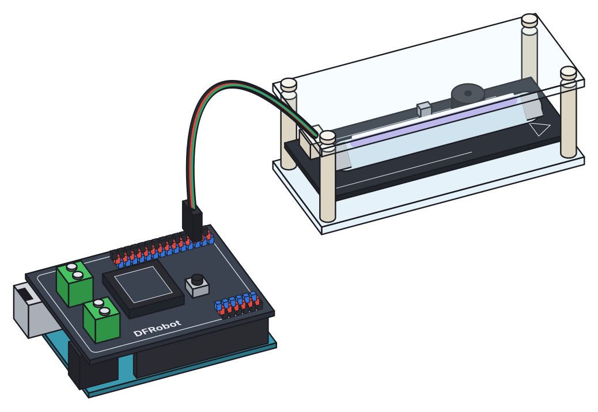
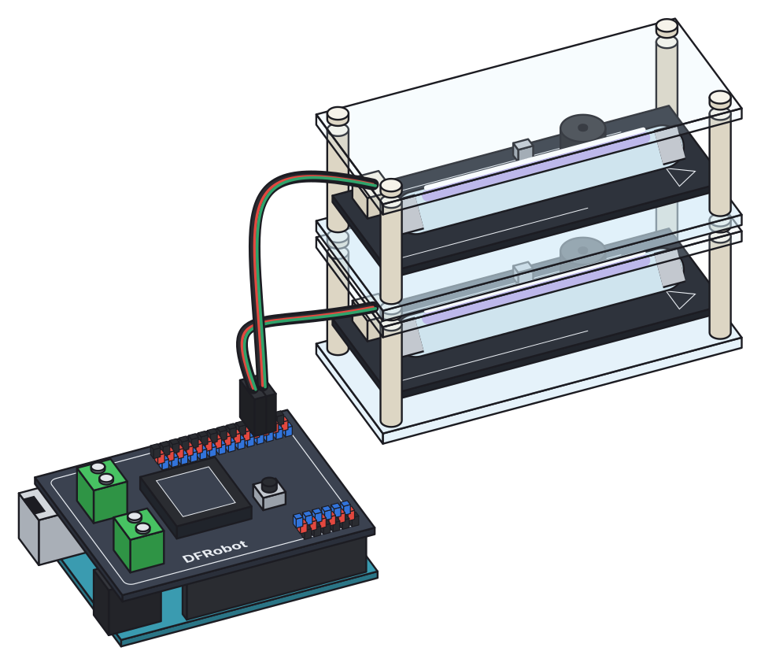
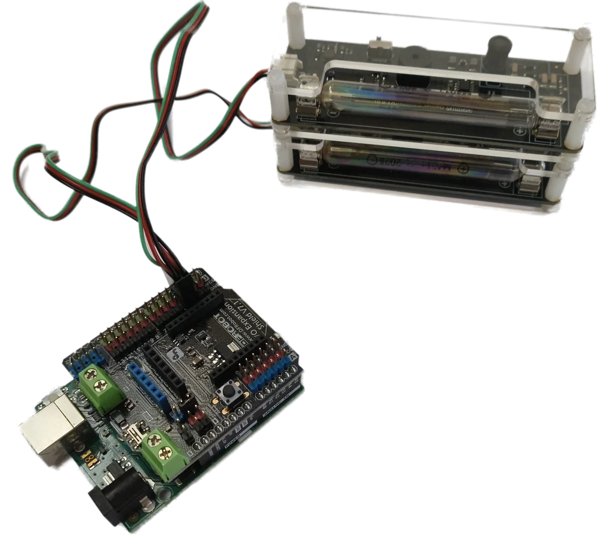

Le projet
Ce site rassemble les programmes, le logiciel et les activités des projets MicroCosmos et Micro(K)osmos. L’objectif est de réinvestir le champ expérimental de la physique des particules et de la physique nucléaire en s’appuyant sur les microcontrôleurs Arduino et les capteurs associés.
Avec un seul tube Geiger, on étudie la radioactivité naturelle du potassium 40 ; en empilant deux tubes et en ne retenant que les impulsions simultanées (les coïncidences), on compte les muons venus des rayons cosmiques.
Explorer le site

Le logiciel Microcosmos
Une interface dans le navigateur pour les deux études : comptages, coïncidences, séries de mesures, histogrammes. Linux, Windows, macOS.
Télécharger →
Le détecteur
Matériel, schémas des montages à un et deux tubes, principe de la coïncidence et versions autonomes sur batterie.
Construire →La coïncidence
Pourquoi deux tubes empilés sélectionnent les muons : schémas, chronogramme et simulateur interactif.
Comprendre →Rayons cosmiques
Gerbes atmosphériques, muons, distribution angulaire et dilatation du temps mesurée entre Caen et l’Alpe d’Huez.
Découvrir →Radioactivité
Le potassium 40 en classe : bruit de fond, statistique, distance, écrans et séparation des rayonnements β et γ.
Expérimenter →Ressources
Travaux pratiques, masterclass ondes gravitationnelles, diaporamas, articles, livres et liens utiles.
Parcourir →Les articles du BUP
Le projet est détaillé dans deux articles parus dans le Bulletin de l’Union des Professeurs de Physique et de Chimie.
Les articles sont disponibles dans la rubrique Ressources pour un usage limité : préférez la promotion du BUP :-)
